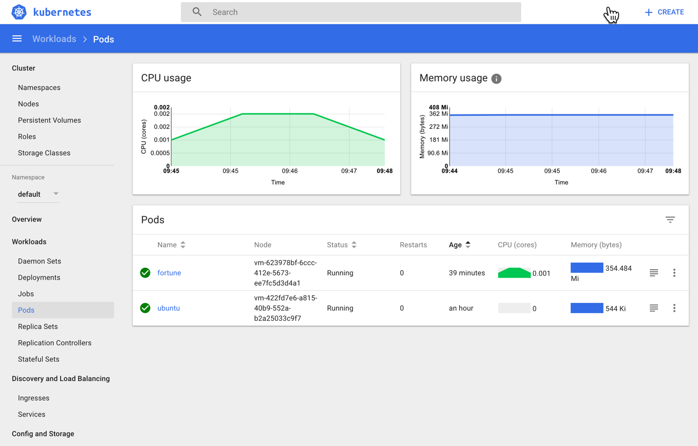
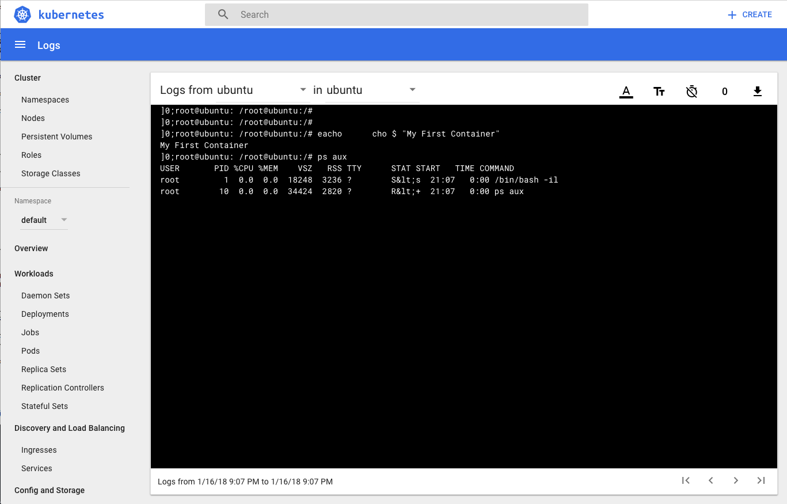

Deploying Your First Container
In order to deploy our first container we must use a Pod. A Pod is a Kubernetes abstraction that represents a group of one or more application containers (such as Docker or rkt), and some shared resources for those containers.
Deploy your first pod
-
Lets create our very first container application in the cluster. To do this we'll use the kubectl run command to create a single pod:
$ kubectl run -i --tty ubuntu --image=ubuntu:16.04 --restart=Never -- /bin/bash -il If you don't see a command prompt, try pressing enter. root@ubuntu:/# -
We've obtained an interactive shell into our container. Feel free to poke around this Ubuntu container. You can see it is started with minimal process by retrieving a process list:
root@ubuntu:/# echo "My First Container" My First Container root@ubuntu:/# ps aux USER PID %CPU %MEM VSZ RSS TTY STAT START TIME COMMAND root 1 0.0 0.0 18248 3236 ? S<s 21:07 0:00 /bin/bash -il root 10 0.0 0.0 34424 2820 ? R<+ 21:07 0:00 ps aux -
You can also view details about the running pod by selecting the Pods link on the lefthand menu within the dashboard application. Additionally, try clicking the pod you created (named 'Ubuntu') in the dashboard. Click the Logs icon near the top right of the screen. What do you see? It appears to be an identical log output to what you have in your terminal window!
 
-
Lastly, you can use the kubectl CLI to retrieve details about the running pod. Open a new command window and use the get and details commands to view varying levels of details about your deployed pod: $ kubectl get pod ubuntu -o wide NAME READY STATUS RESTARTS AGE IP NODE ubuntu 1/1 Running 0 9m 10.200.24.3 vm-623978bf-6ccc-412e-5673-ee7fc5d3d4a1
$ kubectl describe pod ubuntu Name: ubuntu Namespace: default Node: vm-623978bf-6ccc-412e-5673-ee7fc5d3d4a1/10.0.16.11 Start Time: Tue, 16 Jan 2018 16:07:06 -0500 Labels: run=ubuntu Annotations: <none> Status: Running IP: 10.200.24.3 Containers: ubuntu: Container ID: docker://b9919fa275d6250a484e6ef68a66e82ef2c3070fc9475216a8e87f1bd8c73a44 Image: ubuntu:16.04 Image ID: docker-pullable://ubuntu@sha256:d3fdf5b1f8e8a155c17d5786280af1f5a04c10e95145a515279cf17abdf0191f Port: <none> Args: /bin/bash -il State: Running Started: Tue, 16 Jan 2018 16:07:15 -0500 Ready: True Restart Count: 0 Environment: <none> Mounts: /var/run/secrets/kubernetes.io/serviceaccount from default-token-rwdps (ro) Conditions: Type Status Initialized True Ready True PodScheduled True Volumes: default-token-rwdps: Type: Secret (a volume populated by a Secret) SecretName: default-token-rwdps Optional: false QoS Class: BestEffort Node-Selectors: <none> Tolerations: <none> Events: Type Reason Age From Message ---- ------ ---- ---- ------- Normal Scheduled 10m default-scheduler Successfully assigned ubuntu to vm-623978bf-6ccc-412e-5673-ee7fc5d3d4a1 Normal SuccessfulMountVolume 10m kubelet, vm-623978bf-6ccc-412e-5673-ee7fc5d3d4a1 MountVolume.SetUp succeeded for volume "default-token-rwdps" Normal Pulling 10m kubelet, vm-623978bf-6ccc-412e-5673-ee7fc5d3d4a1 pulling image "ubuntu:16.04" Normal Pulled 10m kubelet, vm-623978bf-6ccc-412e-5673-ee7fc5d3d4a1 Successfully pulled image "ubuntu:16.04" Normal Created 10m kubelet, vm-623978bf-6ccc-412e-5673-ee7fc5d3d4a1 Created container Normal Started 10m kubelet, vm-623978bf-6ccc-412e-5673-ee7fc5d3d4a1 Started container